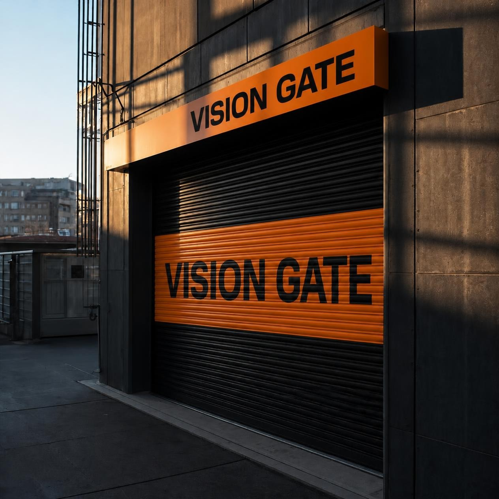

Mühendislik, güvenlik ve tasarım bir arada
Güvenlik ve
estetik kapınızda.
Sağlam montaj, temiz işçilik. Otomatik kepenk, kapı, bariyer ve cam sistemlerinde Türkiye geneline uzanan profesyonel çözümler.
81 ilde hizmet ağı
Uzman montaj
Güvenilir çözümler
Kepenk
Endüstriyel kapı
Bariyer
Panjur
Cam balkon
Giyotin cam
Öne çıkan çözümler
Tüm hizmetleri gör
İhtiyacınıza uygun sistemler.
Kepenkten cam sistemlerine, öne çıkan hizmetlerimize göz atın.


Vision Gate
Aradığınız bilgiye hızlıca ulaşın.
Uygulama alanları
Tüm uygulama alanlarını gör
Farklı yapılara uyum sağlayan çözümler.
Konut, ticari ve cam sistemlerinden seçili uygulama alanlarını keşfedin.